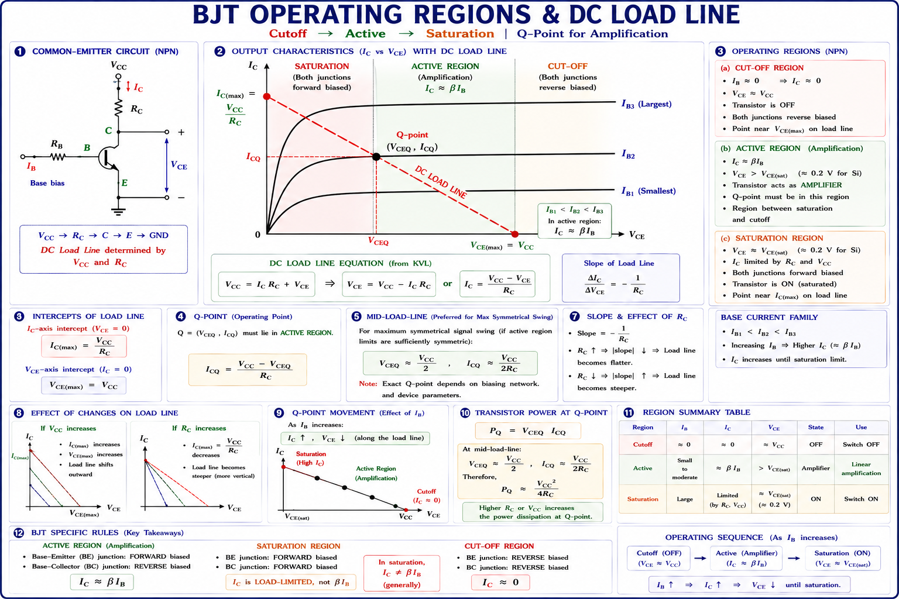
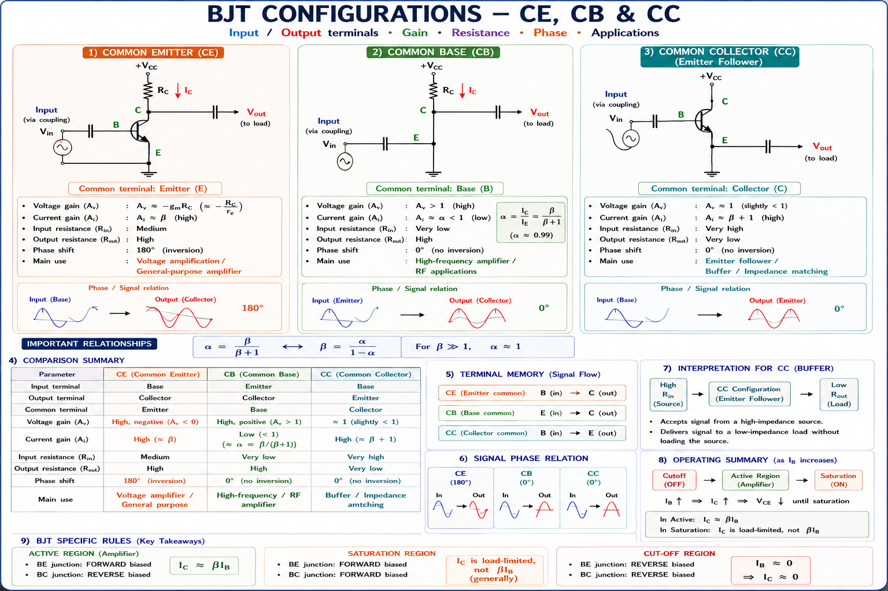
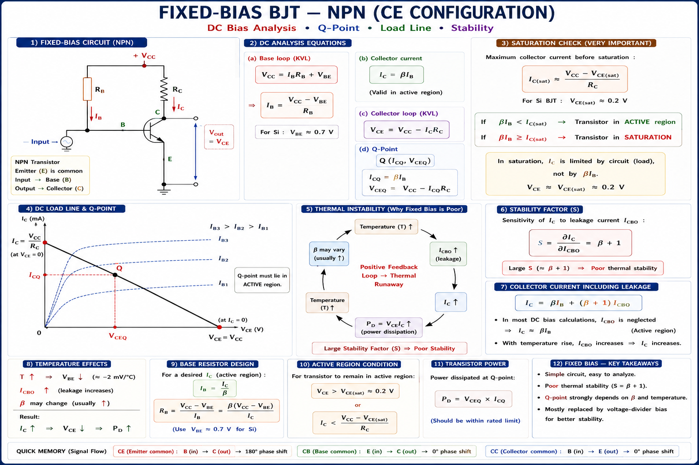
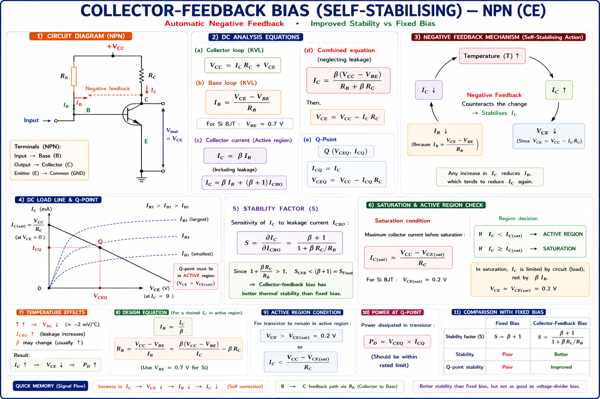
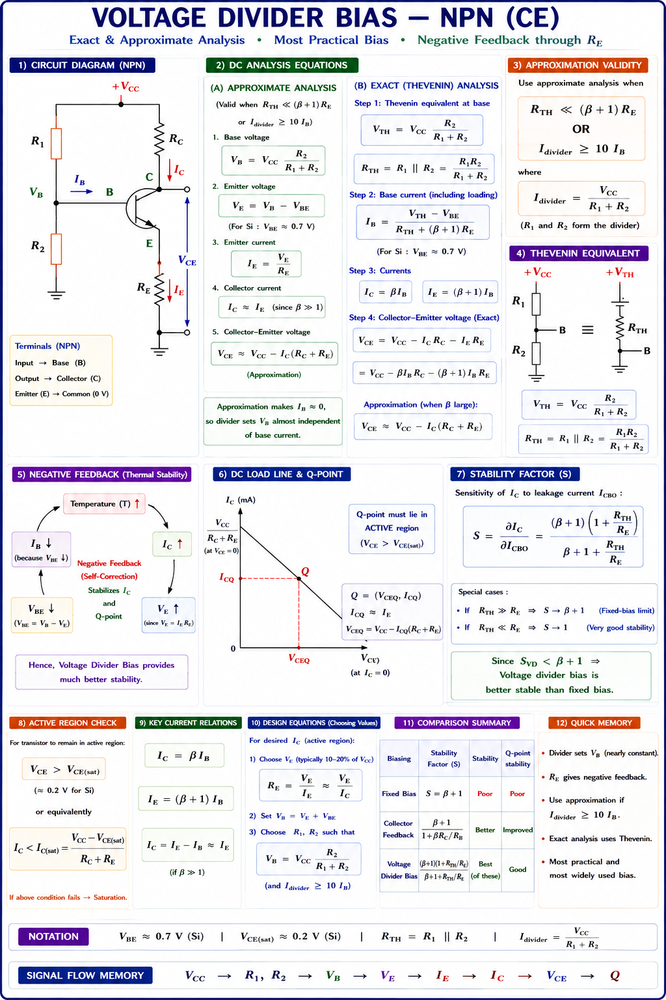
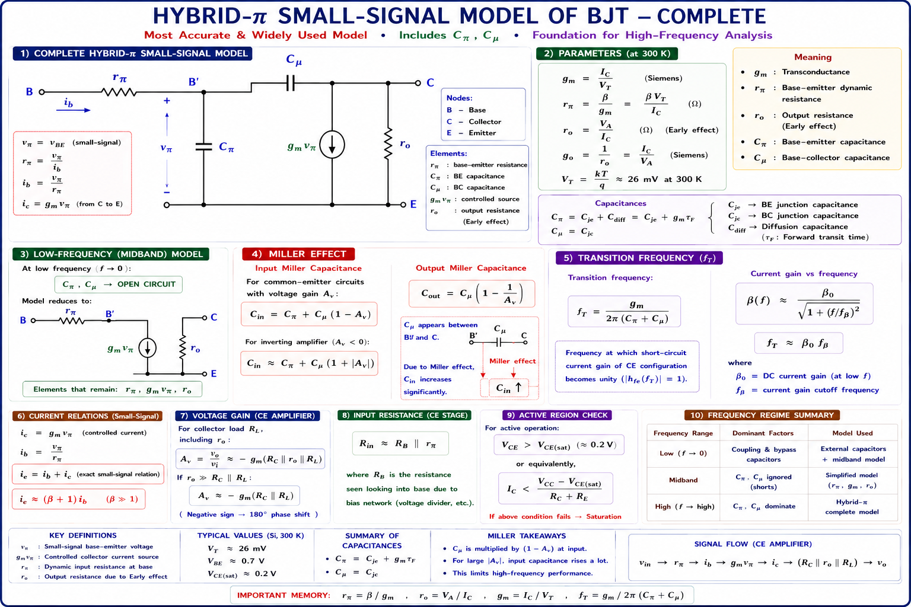
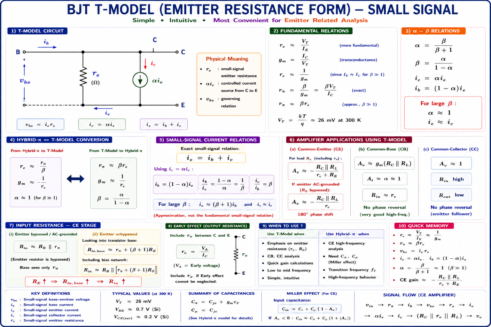
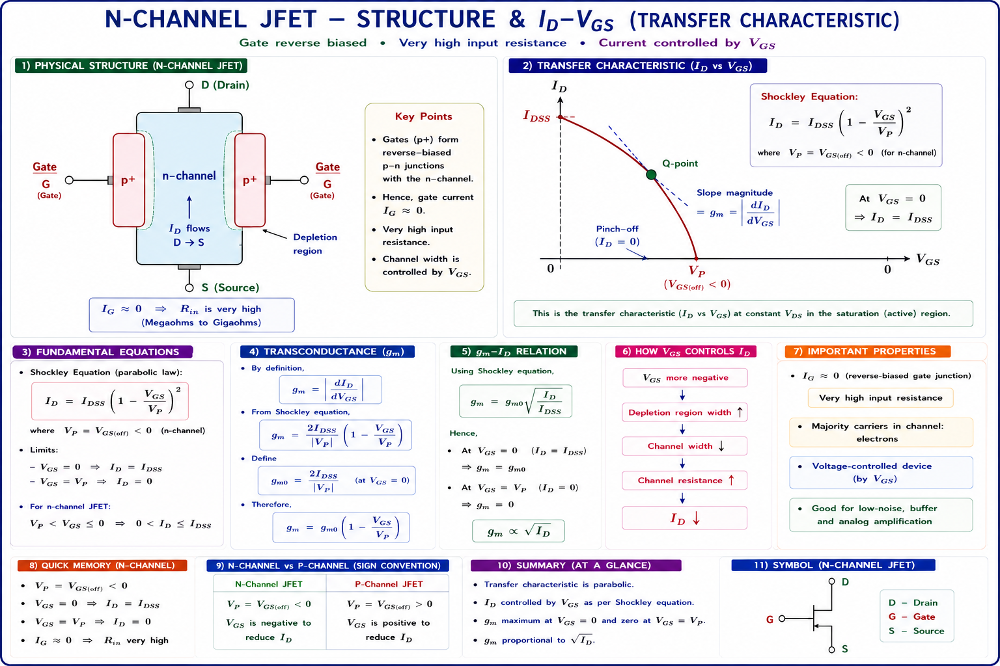
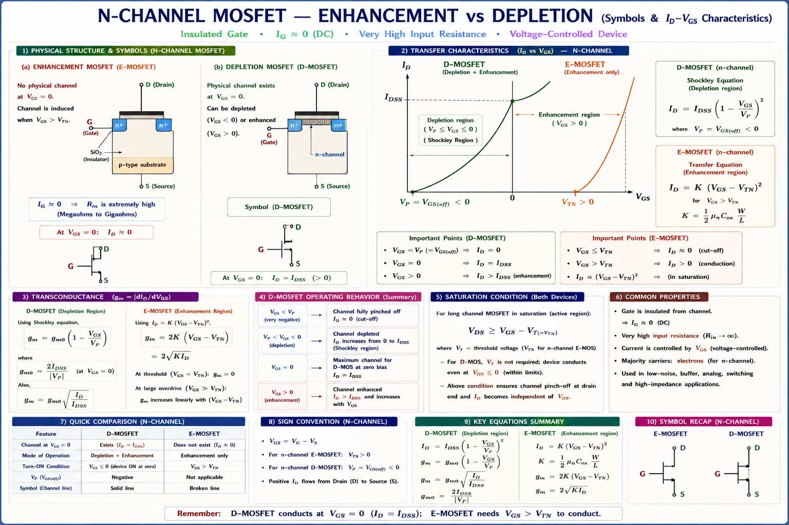

BJT configurations (CE, CB, CC), fixed bias, collector feedback, voltage divider biasing, stability factors S, S', S'', hybrid-π model, T-model, JFET, MOSFET basics, and FET biasing — complete GATE, IES, and PSU exam coverage with full derivations and solved examples.
Imagine you are designing an audio amplifier. You want the transistor to faithfully amplify a small AC music signal without distortion. But a transistor is a non-linear device — it needs to be placed at a carefully chosen operating point called the Q-point (Quiescent Point) before it can behave as a linear amplifier. This process of setting the Q-point is called biasing.[1]
Without proper biasing, AC signals will clip (distort), the transistor may saturate (switch fully ON) or cut off (switch fully OFF), and amplification fails. Biasing = placing the transistor in the active region at a stable, temperature-insensitive operating point.

The Q-point is defined by the values \(I_{CQ}\), \(V_{CEQ}\), and \(I_{BQ}\) under DC (no-signal) conditions. When an AC signal is applied, the instantaneous operating point swings up and down the load line around the Q-point. If the Q-point is poorly chosen — too close to saturation or cut-off — the signal clips on one half-cycle, causing distortion.[2]
In mobile phone amplifiers, the bias circuit is integrated into the \(I_C\) and designed for thermal stability because the phone gets hot during use. Temperature-insensitive biasing (voltage divider bias) is mandatory in such applications. This is the same circuit you study for GATE — it's everywhere in consumer electronics.
A BJT has three terminals: Base (B), Collector (C), and Emitter (E). In any amplifier circuit, one terminal is common to both input and output. This gives three fundamental configurations, each with distinct characteristics for gain, impedance, and phase.[1]

| Parameter | Common Emitter (CE) | Common Base (CB) | Common Collector (CC) |
|---|---|---|---|
| Voltage Gain Av | High (negative) | High (positive) | ≈ 1 (positive) |
| Current Gain Ai | High (\(\beta\)) | Less than 1 (α) | High (\(\beta\)+1) |
| Input Resistance Ri | Medium (kΩ) | Very Low (Ω) | Very High (MΩ) |
| Output Resistance Ro | High | Very High | Very Low (Ω) |
| Phase Shift | 180° (inverted) | 0° (in-phase) | 0° (in-phase) |
| Primary Use | General amplifier | RF/HF amplifier | Buffer/Impedance match |
| GATE Frequency | 🟢 Very High | 🟡 Medium | 🟡 Medium |
Many students confuse the phase inversion. Only CE configuration inverts the signal (180°). CB and CC do not invert. In a two-stage CE-CE amplifier, the total phase shift is 360° ≡ 0° — the output is in phase with the input. This is a frequent GATE MCQ trap.
The simplest biasing method uses a single resistor RB connected from VCC to the base. It is called fixed bias because the base current IB is approximately fixed by the supply voltage and RB, regardless of transistor parameters.[2]

Applying KVL to the base-emitter loop (with VBE ≈ 0.7 V for silicon):
As temperature increases, ICO (leakage) doubles every 10°C. Since IC = βIB + (\(\beta\)+1)ICO, IC increases → VCE drops (device heats more) → ICO increases further. This positive feedback loop is called thermal runaway, which can permanently destroy the transistor. The stability factor \(S = \beta+1\), which is the maximum (worst) possible value.
In collector feedback bias, RB is connected from the collector to the base, rather than from VCC. This creates a negative feedback mechanism: if IC increases (due to temperature), VCE decreases, which reduces VB, which reduces IB, partially counteracting the original increase.[2]

Since RC/RB > 0, the denominator is greater than 1, making S < \(\beta\)+1. This is an improvement over fixed bias. The lower the ratio RC/RB, the higher S remains (worse stability); a large RC/RB ratio gives better stability.
The voltage divider bias (also called self-bias) is the most widely used BJT biasing circuit in practical electronics. It uses two resistors R1 and R2 to create a nearly independent base voltage, plus an emitter resistor RE for additional stability. The Q-point becomes nearly independent of \(\beta\) — essential for mass production where transistor \(\beta\) varies widely.[1]

When RTH ≪ (\(\beta\)+1)RE, VB ≈ VTH = constant. Then IE = (VB − VBE)/RE ≈ constant regardless of \(\beta\) variations. This is the "stiff voltage divider" condition. Stability factor \(S\) → 1 (ideal), meaning IC barely changes with temperature.
When dual power supplies (+VCC and −VEE) are available (common in op-amp based systems), a simple and very stable biasing scheme uses a single resistor RB to ground and an emitter resistor RE to −VEE. This provides excellent stability without a voltage divider network.[2]
In emitter bias, IB depends primarily on VEE and RE. Since VBE ≪ VEE typically, IB ≈ VEE/(RE(\(\beta\)+1)), giving excellent \(\beta\)-independence. Used in \(I_C\) operational amplifier input stages.
BJT parameters change with temperature. Three quantities that cause Q-point shift are: ICO (reverse saturation leakage, doubles every 10°C), VBE (decreases −2 mV/°C), and \(\beta\) (increases with temperature). Each has a corresponding stability factor.[3]
| Bias Circuit | Stability Factor S | Range | Stability |
|---|---|---|---|
| Fixed Bias | \(S = \beta + 1\) | 51 to 301 | Worst |
| Collector Feedback | \(S = \dfrac{\beta+1}{1+\beta R_C/R_B}\) | 10 to 50 | Moderate |
| Voltage Divider Bias | \(S = \dfrac{(\beta+1)(1+R_{TH}/R_E)}{\beta+1+R_{TH}/R_E}\) | 1 to 10 | Best practical |
| Emitter Bias (dual) | \(S \approx 1 + R_B/R_E\) | 1 to 5 | Excellent |
| Ideal (theoretical) | S = 1 | — | Perfect |
Lower S means better stability — not higher. S = 1 is ideal (ΔIC = ΔICO, minimum possible). \(S = \beta+1\) means a 1 μA change in ICO causes a \(\beta\)×1 μA change in IC. Many students incorrectly think higher S = more stable.
When a small AC signal rides on the DC bias, the transistor behaves like a linear two-port network. The hybrid-π model represents this AC behaviour using physical small-signal parameters. It was originally proposed by Giacoletto and is the most widely used model for \(I_C\) transistor analysis at low-to-medium frequencies.[1]

| Parameter | Symbol | Formula | Physical Meaning |
|---|---|---|---|
| Transconductance | gm | IC/VT | AC current per unit AC voltage at B-E junction |
| Base-emitter resistance | rπ | \(\beta\)/gm = VT/IB | Resistance seen looking into base (AC) |
| Output resistance | ro | VA/IC | Finite slope of output characteristics (Early effect) |
| Emitter resistance | re | VT/IC = 1/gm | Intrinsic emitter resistance |
| Diffusion capacitance | Cπ | τF·gm | Charge storage in base during forward operation |
| Junction capacitance | Cμ | Cjc | Collector-base depletion layer capacitance |
The T-model (also called the π-to-T transformed model) is an alternative small-signal equivalent circuit that directly shows the emitter resistance re = 1/gm in series with the emitter. It is particularly useful for CB and CC amplifier analysis because the circuit topology matches naturally.[1]

For CE amplifier: use hybrid-π — vπ is the controlling voltage, naturally fits the B-E input. For CB amplifier: use T-model — ie is the input current, \(r_e\) is in the input path. For CC (emitter follower): both work; T-model shows \(r_e\) directly in the output path.
Unlike a BJT which is a current-controlled device, a JFET (Junction Field Effect Transistor) is a voltage-controlled device. The gate-source voltage VGS controls the drain current ID with virtually zero gate current. This makes FETs ideal for high-impedance input stages, analog switches, and low-noise amplifiers.[1]

The MOSFET (Metal-Oxide-Semiconductor FET) is the dominant device in modern \(I_C\) technology. Unlike JFET, the gate is completely insulated from the channel by a thin SiO2 layer — giving virtually infinite gate-input resistance. MOSFETs come in two main types: Enhancement mode (E-MOSFET) and Depletion mode (D-MOSFET).[1]

| Parameter | BJT | JFET | E-MOSFET | D-MOSFET |
|---|---|---|---|---|
| Control type | Current (\(I_B\)) | Voltage (\(V_{GS}\)) | Voltage (\(V_{GS}\)) | Voltage (\(V_{GS}\)) |
| Input Resistance | kΩ range | MΩ | GΩ (insulated) | GΩ (insulated) |
| Gate current | \(I_B\) ≠ 0 | ≈ 0 | = 0 | = 0 |
| On at \(V_{GS}\) = 0? | No | Yes (depletion) | No (enhancement) | Yes |
| Noise performance | Moderate | Very low | Low | Low |
| \(I_C\) integration | Moderate | Moderate | Excellent (CMOS) | Good |
Step 1 — Thevenin Voltage:
Step 2 — Thevenin Resistance:
Step 3 — Base Current IB:
Step 4 — Collector Current:
Step 5 — VCEQ:
Step 6 — Active Region Check: VCEQ = 6.02 V > VCE(sat) ≈ 0.2 V ✓ and IB > 0 ✓. The transistor is in the active region. Q-point: (6.02 V, 2.168 mA).
Solution: gm = IC/VT. Since gm ∝ IC, doubling IC doubles gm. New gm = 2 × 40 = 80 mA/V.
Solution: IB = (15 − 0.7)/(1×106) = 14.3 μA. IC = \(\beta\)·IB = 100 × 14.3 μA = 1.43 mA.
Explanation: Voltage divider bias with RE achieves S ≈ 1 when RTH ≪ (\(\beta\)+1)RE. This combination of "stiff" voltage divider + emitter degeneration gives the most robust Q-point stability against temperature and \(\beta\) variations. Fixed bias has \(S = \beta+1\) — worst.
Solution: gm0 = 2IDSS/|VP| = 2×8/4 = 4 mA/V. At VGS = −2 V: gm = gm0(1 − VGS/VP) = 4(1 − (−2)/(−4)) = 4×0.5 = 2 mA/V.
Get instant explanations on biasing, small signal models, GATE numericals, and conceptual questions.
CE: high \(A_v\) (−ve), high \(A_i\), 180° phase. CB: high \(A_v\) (+ve), \(A_i\) < 1, 0°, RF use. CC: \(A_v \approx 1\), high \(A_i\), buffer. CE most common for amplification.
\(I_B\) = (\(V_{CC}\)−\(V_{BE}\))/\(R_B\). Simple but worst stability \(S = \beta+1\). Thermal runaway risk. Not used in modern circuits. Baseline for comparison only.
\(V_{TH}\) = \(V_{CC}\)·\(R_2\)/(\(R_1\)+\(R_2\)). \(R_{TH}\) = \(R_1\)∥\(R_2\). \(S \to 1\) when \(R_{TH} \ll (\beta+1)R_E\). Industry standard. Q-point \(\beta\)-independent under stiff divider condition.
\(S = \frac{\partial I_C}{\partial I_{CO}}\). \(S' = \frac{\partial I_C}{\partial V_{BE}}\). \(S'' = \frac{\partial I_C}{\partial \beta}\). \(\Delta I_C = S \Delta I_{CO} + S' \Delta V_{BE} + S'' \Delta \beta\). Lower S = better. S = 1 is ideal. Fixed bias \(S = \beta+1\) worst.
Hybrid-π: \(r_\pi = \frac{\beta}{g_m}\), \(g_m\) = \(I_C\)/\(V_T\), \(r_o = \frac{V_A}{I_C}\). T-model: \(r_e = \frac{1}{g_m}\), \(r_\pi = \beta r_e\). Both equivalent. Hybrid-π for CE; T-model for CB/CC circuits.
JFET: \(I_D\) = \(I_{DSS}\)(1−\(V_{GS}\)/\(V_P\))². E-MOSFET: \(I_D\) = \(K_n\)(\(V_{GS}\)−\(V_{TN}\))². Gate current ≈ 0. Self-bias: \(V_{GS}\) = −\(I_D\)·\(R_S\). \(g_m\) = 2IDSS/|\(V_P\)|·(1−\(V_{GS}\)/\(V_P\)).
Frequency Response of Amplifiers — Low-frequency response (coupling and bypass capacitor effects), mid-band gain, high-frequency response (Miller effect, bandwidth), Bode plots, gain-bandwidth product, and complete GATE and IES analysis of multi-stage amplifiers.
| Topic | Probability | Key Formula to Remember |
|---|---|---|
| gm calculation from IC | 🟢 HIGH | gm = IC/VT = IC/26 mV |
| Voltage divider Q-point | 🟢 HIGH | VTH = VCC·R2/(R1+R2), Thevenin method |
| Stability factor \(S\) | 🟢 HIGH | Fixed: \(\beta\)+1; VDB: (\(\beta\)+1)(1+RTH/RE)/(\(\beta\)+1+RTH/RE) |
| CE amplifier gain (hybrid-π) | 🟢 HIGH | Av = −gm·RC |
| JFET Shockley & gm | 🟡 MED | ID = IDSS(1−VGS/VP)² |
| rπ, re, ro relations | 🟡 MED | rπ = \(\beta\)·re = \(\beta\)/gm; ro = VA/IC |
| E-MOSFET threshold voltage | 🟡 MED | ID = Kn(VGS−VTN)² |
| Emitter follower (CC) analysis | 🔴 LOW | Av ≈ 1, Rout = RE∥(re+RS/\(\beta\)) |
All technical content is derived from the following standard textbooks. All explanations, derivations, diagrams, and examples are original to Aarova AI.